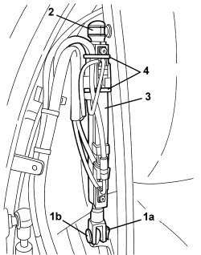
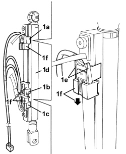
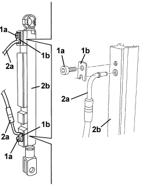
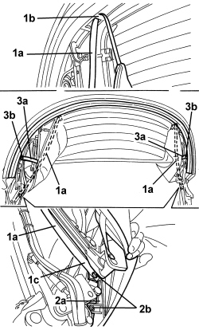

7030H74 HYDRAULIC ACTUATOR FOR HOOD ARCH 5 (ONE), LEFT OR RIGHT - R.R.
- Path
- Procedures > 70 FITTINGS > 7030 SUN ROOF/GLASS PANEL > 7030H AUTOMATICALLY OPERATED HOOD > 7030H74 HYDRAULIC ACTUATOR FOR HOOD ARCH 5 (ONE), LEFT OR RIGHT - R.R.
- Kind
- repair procedure (removal / refitting; the operation number is the code)
- Applies to
- engines: 2.2 JTS, 3.2 JTS; all production periods
- Interactive page
- https://sloeber94.github.io/elrnDB-aBrrSpdr/en/#/946003677
Applies to: engines: 2.2 JTS, 3.2 JTS; all production periods
 Removing
Removing
 Refitting
Refitting- Raise the rear part of the hood (5th arc) completely using the electric control.
- Discharge the hydraulic system pressure.
Op. 0010T79 HOOD HYDRAULIC SYSTEM - DISCHARGE AND RESTORE PRESSURE
1. Working on the side of the actuator to be removed, drill out rivet (1a) (recover the removed rivet parts).
2. Move interior lining edge (2a) and undo bolts (2b).
3. Detach side link (3a) from terminal fastening (3b) and from loop (3c).

Applies to: engines: 2.2 JTS, 3.2 JTS; all production periods
1. Release retainer (1a) and withdraw pin (1b).
2. Using a screwdriver, prise up the retaining clip from the end of the hydraulic actuator (without removing it).
3. Move the hydraulic actuator by disengaging it from the ball joint.
4. For the left hydraulic actuator only.
Cut the retaining bands.

Applies to: engines: 2.2 JTS, 3.2 JTS; all production periods
1. For the left hydraulic actuator only
Mark the reciprocal position of sensors (1a), (1b) and (1c).
Move sensors (1a), (1b) and (1c) from hydraulic actuator (1d) after having released tabs (1e) and slid out retainers (1f).

Applies to: engines: 2.2 JTS, 3.2 JTS; all production periods
1. Undo bolts (1a) and remove plates (1b).
2. Disconnect pipes (2a) from actuator (2b).

Applies to: engines: 2.2 JTS, 3.2 JTS; all production periods
Refitting
Removing- Check that the hydraulic actuator is not damaged.
- Connect the pipes to the actuator, then fit the plates and secure them using the bolts.
- For the left hydraulic actuator only. Connect the sensors to the actuator in the correct position, then secure them using the retainers; attach the tabs.
- Engage the hydraulic actuator onto the ball joint and fit the retaining clip.
- Secure the other end of the hydraulic actuator using the pin and insert the retainer in its housing.
1. Insert side link (1a) in loop (1b) and place terminal fastening (1c) in position.
2. Position side bracket (2a) and screw in bolts (2b).
3. Position side link (3a) and secure it with rivet (3b).

Applies to: engines: 2.2 JTS, 3.2 JTS; all production periods
- Restore the hydraulic system pressure.
Op. 7030H03 HOOD MANUAL OPENING FOLLOWING DEACTIVATION OF HYDRAULIC SYSTEM - CARRY OUT PROCEDURE
- Carry out several opening/closing cycles of the hood to bleed the hydraulic system.
- Check that the hood is working correctly.
Topics linked from this page (2)
- 0010T79 HOOD HYDRAULIC SYSTEM - DISCHARGE AND RESTORE PRESSURE
- 7030H03 HOOD MANUAL OPENING FOLLOWING DEACTIVATION OF HYDRAULIC SYSTEM - CARRY OUT PROCEDURE